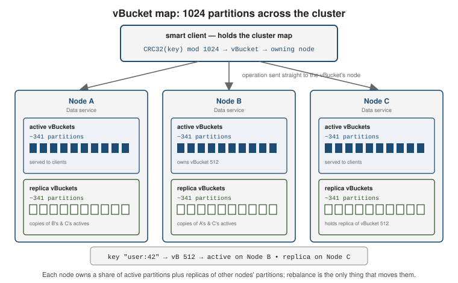
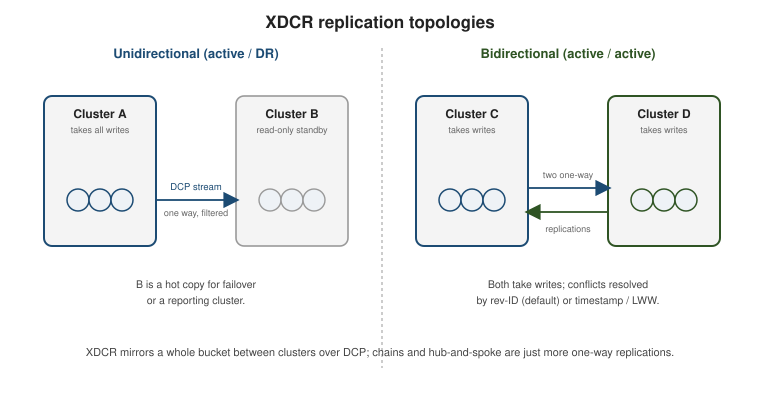

Clusters, replication, failover & XDCR
|
This content was generated with the assistance of AI and should be verified against the official documentation before being relied on in production. |
A Couchbase cluster is a set of nodes that present one logical database. Data is split into 1024 fixed partitions — vBuckets — that are spread across the nodes, replicated between them, and, through XDCR, mirrored to other clusters. This page covers how the cluster is laid out and scaled, how copies are kept in sync, what happens when a node fails, and how two clusters replicate to each other.
The worked examples use the keyspace of the rest of this section (bucket app, scope sales, collection
orders). They were run for real against Couchbase Server 7.6.2 Enterprise in Docker: first a two-node
cluster (node 1 runs every service, node 2 only the Data service), then a separate one-node cluster acting as
an XDCR destination. Where a command or output appears below, it is the actual result.
Cluster topology, services & scaling
Every node runs the cluster-management (ns_server) layer and any subset of the services: Data (KV),
Query, Index, Search, Analytics, Eventing, and Backup. Placing services on different nodes is
Multi-Dimensional Scaling (MDS) — a query-heavy workload can be given more Query/Index nodes without
adding Data nodes, and each service is sized and failed over on its own. See
Clusters
and Availability for the architecture.
Each Data node owns a slice of the 1024 vBuckets. A key is hashed to a vBucket id, and the cluster map records which node currently holds the active copy of each vBucket and which nodes hold its replicas. The map changes only on rebalance or failover.
The hash is CRC32 of the key, taking bits 16 to 30 of the result, taken modulo the vBucket count — not the
plain CRC32(key) mod 1024. In Python:
import zlib
def vbucket(key, count=1024):
return ((zlib.crc32(key.encode()) >> 16) & 0x7fff) % count
vbucket("user:42") # 111
zlib.crc32(b"user:42") % 1024 # 390 -- NOT the vBucketThe claim is checkable. On the two-node cluster, the node that owns vBucket 111 answers a key-existence
probe for user:42 there and nothing for the other candidate:
$ cbstats localhost:11210 -u Administrator -p password -b app vkey user:42 111
verification for key user:42
key_cas: 1794318298700906496
key_datatype: json
key_exptime: 0
$ cbstats localhost:11210 -u Administrator -p password -b app vkey user:42 390
Memcached error #1: KEY_ENOENT : Not Found :The cluster map is exposed over REST (GET /pools/default/buckets/app, field vBucketServerMap). After
loading 200 user:N items into the two-node cluster with one replica, a few lines of Python turn the map into
the picture below:
numReplicas: 1 vBuckets: 1024 servers: ['172.21.0.2:11210', '172.21.0.3:11210']
active per node: {'172.21.0.2:11210': 512, '172.21.0.3:11210': 512}
replica per node: {'172.21.0.3:11210': 512, '172.21.0.2:11210': 512}
any vBucket with active and replica on the same node: False
user:42 -> vBucket 111 active 172.21.0.2:11210 replica 172.21.0.3:11210
user:7 -> vBucket 710 active 172.21.0.3:11210 replica 172.21.0.2:11210

Each node holds 512 active and 512 replica vBuckets, and a vBucket’s replica is never on the same node as its active copy. Keys are spread by the hash, so adding or removing a node moves whole vBuckets, never rehashing individual keys.
The SDK is a smart client: it connects to one or more seed nodes, downloads the cluster map, then sends each operation straight to the node that owns the relevant vBucket. It re-fetches the map when the topology changes, so no external router or proxy is needed.
// The connection string lists seed nodes; the SDK discovers the rest from the map.
Cluster cluster = Cluster.connect(
"couchbase://10.0.0.1,10.0.0.2,10.0.0.3",
ClusterOptions.clusterOptions("appuser", "s3cret"));
// couchbases:// selects TLS. A single DNS SRV record can expand to the seed list.Adding or removing a node is a two-step operation: register the node (or mark one for removal), then rebalance. Rebalance recomputes the vBucket assignment and streams partitions to their new owners while the cluster stays online.
# Add a Data node, then rebalance it in.
couchbase-cli server-add -c 10.0.0.1:8091 -u Administrator -p password \
--server-add https://10.0.0.5:18091 \
--server-add-username Administrator --server-add-password password \
--services data
couchbase-cli rebalance -c 10.0.0.1:8091 -u Administrator -p passwordThe second node of the example cluster was joined exactly this way; the command refuses a plain http://
address on a current server ("http is prohibited due to security reasons"), so use the TLS management port
(18091) of the new node. After the rebalance, server-list shows both members:
ns_1@172.21.0.2 172.21.0.2:8091 healthy active ns_1@172.21.0.3 172.21.0.3:8091 healthy active
A swap rebalance adds and removes an equal number of nodes in one rebalance. Because the counts match, vBuckets move directly from each leaving node to a joining node with no intermediate redistribution — the preferred way to replace hardware or upgrade an OS.
# Swap one node for a replacement in a single rebalance.
couchbase-cli server-add -c 10.0.0.1:8091 -u Administrator -p password \
--server-add https://10.0.0.6:18091 \
--server-add-username Administrator --server-add-password password --services data
couchbase-cli rebalance -c 10.0.0.1:8091 -u Administrator -p password \
--server-remove 10.0.0.3:8091Sizing a cluster means fixing five quantities together:
| Dimension | Guidance |
|---|---|
RAM |
The Data service keeps metadata (and, ideally, the working set) in memory. Aim for a high resident ratio; budget per-bucket quota plus headroom for Index/Search/Analytics. |
Storage |
Total data x (1 + |
CPU |
Query, Index, Search, and Analytics are CPU-bound; the Data service mostly is not. MDS lets you add cores where the load is. |
Node count |
At least |
Bandwidth |
Rebalance, intra-cluster replication, and XDCR all consume network; size the interconnect for a full rebalance, not steady state. |
A worked sizing, using the usual back-of-envelope formula for the Data service: 50 million items of 2 KB with
numReplicas 1, a 20 percent working set and about 56 bytes of metadata per item. Raw data is 100 GB and, with
a replica, 200 GB across the cluster. The metadata alone is 50,000,000 x 56 bytes x 2 copies, about 5.6 GB of
RAM; the 20 percent working set of values adds 0.2 x 100 GB x 2 = 40 GB. Plan therefore roughly 46 GB of
bucket quota cluster-wide plus overhead, which three data nodes of 32 GB RAM comfortably provide; the disk side
(200 GB plus compaction headroom of the same order) fits three modest SSDs. Failing a node leaves two nodes
holding every active copy, so the quota must also hold the cluster after one loss. Treat these as starting
estimates; the official sizing guide has the per-engine constants.
See Rebalance for how partition moves are scheduled and throttled.
Intra-cluster replication with DCP
Within a cluster, replicas are kept current by the Database Change Protocol (DCP) — an ordered, restartable stream of every mutation on a vBucket, keyed by the per-vBucket sequence number. The active vBucket streams its mutations to each replica vBucket; the same stream feeds the Index, Search, Analytics, Eventing services, and XDCR.
numReplicas is a per-bucket setting from 0 to 3. With numReplicas: 1 every vBucket has one active copy
and one replica copy on another node, so the cluster survives one node loss without data loss. Raising it
needs a rebalance and enough nodes to place each copy separately. The new setting is recorded immediately but
only takes effect on rebalance; until then the cluster map still reflects the old replica count.
# Change the replica count for a bucket, then rebalance to build the new copies.
couchbase-cli bucket-edit -c 10.0.0.1:8091 -u Administrator -p password \
--bucket app --bucket-replica 2
couchbase-cli rebalance -c 10.0.0.1:8091 -u Administrator -p passwordReads and writes normally go to the active copy. When the active is unreachable (a node down, a failover in
progress) an application can read from a replica explicitly, accepting that a replica may be slightly behind.
On the two-node cluster, a replica read of user:42 and the fan-out variant gave:
r = col.get_any_replica("user:42")
print("get_any_replica is_replica:", r.is_replica, r.content_as[dict])
for r in col.get_all_replicas("user:42"):
print(" copy is_replica =", r.is_replica)get_any_replica is_replica: True {'name': 'user 42'}
copy is_replica = True
copy is_replica = False
// Java SDK: read whichever copy answers first (active or any replica).
GetReplicaResult any = collection.getAnyReplica("user:42");
// Or the active plus every replica, as a stream, to compare them.
collection.getAllReplicas("user:42").forEach(copy ->
System.out.println(copy.isReplica() + " " + copy.contentAsObject()));isReplica() tells you whether a result came from a replica. Replica reads are a KV-only feature; Query,
Search, and Analytics always work from their own index built off DCP.
Failover & Server Groups
Failover promotes a replica vBucket to active so the cluster keeps serving the affected partitions. It does not move data — a later rebalance restores the replica count. Three kinds:
| Kind | When & effect |
|---|---|
Automatic |
The cluster manager detects an unresponsive node and fails it over on its own, after a configurable timeout, subject to a quorum and a per-cluster count limit. |
Graceful |
Operator-initiated for a healthy node (planned maintenance). Active vBuckets are handed to replicas that are first brought fully up to date, so no mutations are lost. |
Hard |
Operator-initiated for an unresponsive node when automatic failover did not fire. Fast, but un-replicated mutations on the failed node are lost. |
The two-node cluster was taken through a graceful failover, delta recovery and a hard failover. The helper counted active and replica vBuckets from the cluster map after each step.
Graceful failover of node 2 (a healthy node), then the node is listed as failed over and every vBucket is active on node 1 with no replica:
SUCCESS: Server failed over
serverList ['172.21.0.2:11210'] replicas 1
active {'172.21.0.2:11210': 1024}
replica {} vBuckets without replica: 1024
ns_1@172.21.0.2 172.21.0.2:8091 healthy active
ns_1@172.21.0.3 172.21.0.3:8091 healthy inactiveFailed
Delta recovery re-adds the same node and reuses the data already on its disk, so only the missed mutations stream across (full recovery would empty it first); a rebalance then restores the original layout:
SUCCESS: Servers recovered
SUCCESS: Rebalance complete
active {'172.21.0.2:11210': 512, '172.21.0.3:11210': 512}
replica {'172.21.0.3:11210': 512, '172.21.0.2:11210': 512} vBuckets without replica: 0
Hard failover of a node that has stopped responding (the container of node 2 was stopped). The node is reported unhealthy, the failover is issued from the surviving node, and its replicas are promoted:
ns_1@172.21.0.2 172.21.0.2:8091 healthy active
ns_1@172.21.0.3 172.21.0.3:8091 unhealthy active
SUCCESS: Server failed over
active {'172.21.0.2:11210': 1024} no replica: 1024
All 200 user:N items were then read through the SDK from the single surviving node, and none was lost
(readable after hard failover: 200 of 200) because each vBucket’s replica had already received every
mutation. Note one trap shown by the same session: a couchbase-cli failover run against the very node that
was orchestrating the cluster fails with which is orchestrating the failover must be one of the nodes that
survive the failover; run it against a node that stays.
Automatic failover proceeds only if a quorum of the remaining nodes agree the target is down, which stops a
network partition from failing over both sides. It needs enough nodes to decide (at least three, or two plus an
arbiter node), and it is bounded by a count (default 1, raised with --max-failovers) that resets after a
rebalance, so a cascade of failures cannot shrink the cluster to nothing automatically.
# Enable automatic failover: 30s timeout, allow up to 2 sequential auto-failovers.
couchbase-cli setting-autofailover -c 10.0.0.1:8091 -u Administrator -p password \
--enable-auto-failover 1 --auto-failover-timeout 30 --max-failovers 2The resulting settings, as stored by the cluster:
{"enabled":true,"timeout":30,"count":0,"failoverOnDataDiskIssues":{"enabled":false,"timePeriod":120},
"disableMaxCount":false,"maxCount":2,"canAbortRebalance":true,"failoverPreserveDurabilityMajority":false}
Server Groups give the cluster rack / availability-zone awareness. Assign each node to a group and Couchbase places every vBucket’s replica in a different group from its active, so losing a whole rack or zone still leaves a copy of every partition. (Rack-zone awareness is an Enterprise Edition feature.)
$ couchbase-cli group-manage -c 10.0.0.1:8091 -u Administrator -p password \
--create --group-name zone-a
SUCCESS: Server group created
$ couchbase-cli group-manage -c 10.0.0.1:8091 -u Administrator -p password \
--move-servers 10.0.0.1:8091 --from-group "Group 1" --to-group zone-a
SUCCESS: Servers moved between groups
$ couchbase-cli group-manage -c 10.0.0.1:8091 -u Administrator -p password --list
Group 1
zone-a
server: 10.0.0.1:8091The active/replica promotion model is close to a MongoDB replica set electing a new primary from its secondaries — see MongoDB Replica Sets — except Couchbase does it per vBucket rather than per data set, so different partitions can have their active copy on different nodes at the same time.
Cross Data Center Replication (XDCR)
XDCR continuously replicates a bucket to a bucket in a remote cluster over the same DCP streams used internally. It is configured per source bucket and is independent of intra-cluster replication.

Topologies are built from one-way replications:
-
Unidirectional — source pushes to a destination that takes no local writes (hot standby / disaster recovery, or feeding a reporting cluster).
-
Bidirectional — two unidirectional replications in opposite directions, giving an active-active pair where both clusters take writes.
-
Chains and hub-and-spoke are just more one-way replications between more clusters.
# Register the remote cluster, then replicate one bucket with a key filter.
couchbase-cli xdcr-setup -c 10.0.0.1:8091 -u Administrator -p password \
--create --xdcr-cluster-name dr --xdcr-hostname dr1.example.com \
--xdcr-username Administrator --xdcr-password password \
--xdcr-secure-connection full --xdcr-certificate ./dr-ca.pem
couchbase-cli xdcr-replicate -c 10.0.0.1:8091 -u Administrator -p password \
--create --xdcr-cluster-name dr \
--xdcr-from-bucket app --xdcr-to-bucket app \
--filter-expression 'REGEXP_CONTAINS(META().id, "^order:")'Use --xdcr-secure-connection full with the destination’s root certificate on any real link; the throwaway
Docker pair below used --xdcr-secure-connection none on a private network.
Filter expressions are SQL++-style boolean predicates over the document body and META(); only matching
documents replicate, so a region can send just its own records to a shared hub.
The pair was then run for real: a one-node destination cluster with a bucket app, and the replication above
(filter ^order:, source bucket app). Twenty order:N items and one user:new item were written to the
source, then the destination was probed:
for i in range(1, 21): src.upsert("order:%d" % i, {"total": i * 1.5})
src.upsert("user:new", {"n": 1})
time.sleep(6)
# probe the destination{'order:1': 'replicated', 'order:20': 'replicated', 'user:new': 'DocumentNotFoundException', 'user:7': 'DocumentNotFoundException'}
update propagated: {'total': 999}
delete propagated: DocumentNotFoundException
The filter held: orders crossed to the destination, other keys did not. An update of order:1 and the
deletion of order:2 on the source both propagated (deletes replicate as tombstones, see
Storage internals, security &
administration). The remote cluster reference and replication are visible in REST
(/pools/default/remoteClusters reports RC_OK and secureType none for the test pair;
/pools/default/replications lists the filter expression).
Conflict resolution decides which version wins when the same key is mutated on both sides before
replication catches up. It is fixed per bucket at creation time (conflictResolutionType in the bucket
info, seqno by default):
-
Sequence number / revision-ID (default) — the mutation with the higher revision count wins, then CAS breaks ties. Deterministic and clock-independent; the usual choice.
-
Timestamp / Last-Write-Wins (LWW) — the mutation with the higher wall-clock time wins (chosen with
--conflict-resolution timestampat bucket creation). Needs tightly synchronised clocks (NTP) across every node of every cluster, but matches "the newest edit should win" for active-active.
A bidirectional pair must use the same conflict-resolution type on both buckets; mixing them yields divergent results. Recent releases add enableCrossClusterVersioning on a bucket, which the Mobile-plus-XDCR configuration needs; see the XDCR documentation before enabling it, because it is irreversible.
XDCR also carries the _sync metadata Couchbase Mobile writes, so a cluster fronted by Sync Gateway can be
replicated to another region without breaking mobile clients.
Monitoring watches the queues in both directions. changes_left is the backlog still to be sent (outbound)
or applied (inbound); at steady state it hovers near zero. The statistic is reached through the source
bucket’s stats endpoint, using the remote cluster’s uuid in the replication id:
UUID=$(curl -s -u Administrator:password http://10.0.0.1:8091/pools/default/remoteClusters \
| python3 -c 'import json,sys; print(json.load(sys.stdin)[0]["uuid"])')
curl -s -u Administrator:password \
"http://10.0.0.1:8091/pools/default/buckets/app/stats/replications%2F$UUID%2Fapp%2Fapp%2Fchanges_left"
# Also in the Web Console: XDCR > the replication's "ongoing" stats.The reply is a JSON time series; after the test above its nodeStats for docs_written ended at 21 (the 20
orders plus the later update) and changes_left at 0.
XDCR replicates a bucket in full to each destination; it does not partition one data set across clusters. For splitting a single logical data set across many servers for scale, the contrast is MongoDB’s approach in MongoDB Sharding — Couchbase does that inside one cluster with vBuckets and rebalance, and uses XDCR only for cross-site copies. Pro Couchbase Server devotes a chapter to XDCR; the 2.x-era terminology it uses (continuous replication, the "XDCR checkpoints" tab) maps onto the current model above, with collection-level filtering and mapping being the main newer capability.
Continue with Storage internals, security & administration.